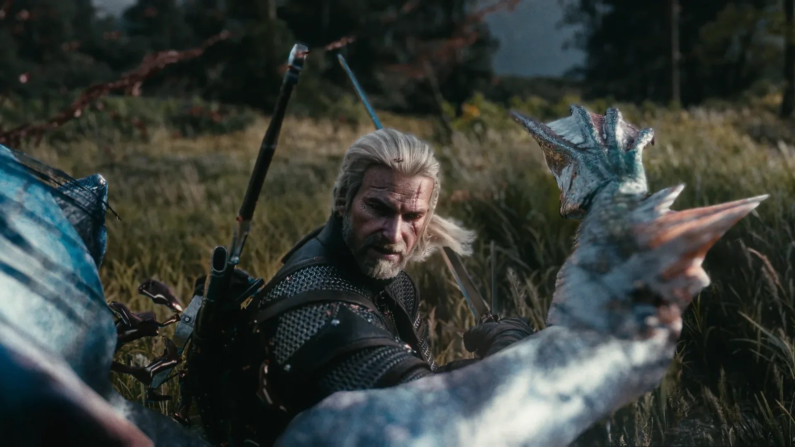

Virtual Photography
Photographs taken inside The Witcher 3 and Cyberpunk 2077: framing, light and colour chosen as on a film set.

- Medium
- The Witcher 3 · Cyberpunk 2077
Have a similar project in mind?
Get in touchPhotographs taken inside The Witcher 3 and Cyberpunk 2077: framing, light and colour chosen as on a film set.

Have a similar project in mind?
Get in touch